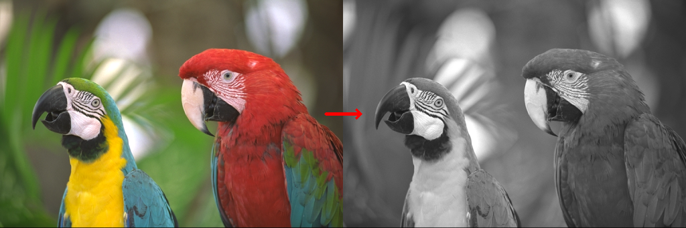
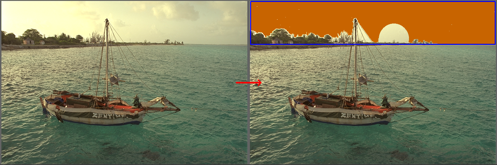
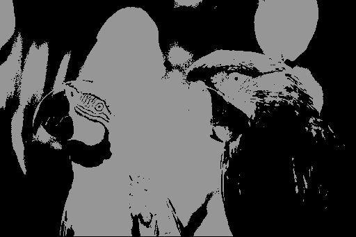
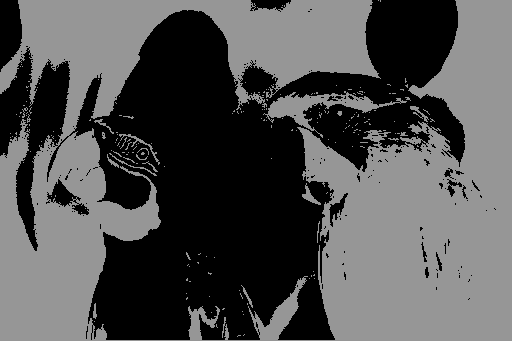
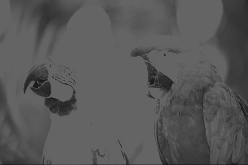
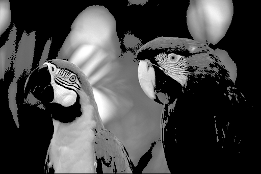
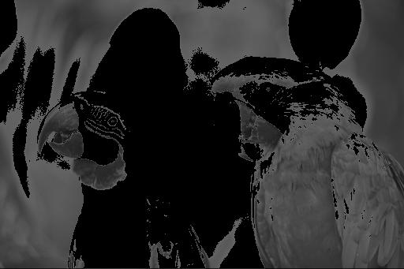

| Safe Haskell | None |
|---|---|
| Language | Haskell2010 |
OpenCV.ImgProc.MiscImgTransform
- cvtColor :: forall fromColor toColor shape srcChannels dstChannels srcDepth dstDepth. (ColorConversion fromColor toColor, ColorCodeMatchesChannels fromColor srcChannels, dstChannels ~ S (ColorCodeChannels toColor), srcDepth `In` `[D, S Word8, S Word16, S Float]`, dstDepth ~ ColorCodeDepth fromColor toColor srcDepth) => Proxy fromColor -> Proxy toColor -> Mat shape srcChannels srcDepth -> CvExcept (Mat shape dstChannels dstDepth)
- module OpenCV.ImgProc.MiscImgTransform.ColorCodes
- floodFill :: (PrimMonad m, channels `In` `[S 1, S 3]`, depth `In` `[D, S Word8, S Float, S Double]`, IsPoint2 point2 Int32, ToScalar color) => Mut (Mat shape channels depth) (PrimState m) -> Maybe (Mut (Mat (WidthAndHeightPlusTwo shape) (S 1) (S Word8)) (PrimState m)) -> point2 Int32 -> color -> Maybe color -> Maybe color -> FloodFillOperationFlags -> m Rect2i
- data FloodFillOperationFlags = FloodFillOperationFlags {}
- defaultFloodFillOperationFlags :: FloodFillOperationFlags
- data ThreshType
- data ThreshValue
- threshold :: depth `In` `[Word8, Float]` => ThreshValue -> ThreshType -> Mat shape (S 1) (S depth) -> CvExcept (Mat shape (S 1) (S depth), Double)
- watershed :: PrimMonad m => Mat (S `[h, w]`) (S 3) (S Word8) -> Mut (Mat (S `[h, w]`) (S 1) (S Int32)) (PrimState m) -> CvExceptT m ()
Color conversion
Arguments
| :: forall (fromColor :: ColorCode) (toColor :: ColorCode) (shape :: DS [DS Nat]) (srcChannels :: DS Nat) (dstChannels :: DS Nat) (srcDepth :: DS *) (dstDepth :: DS *). (ColorConversion fromColor toColor, ColorCodeMatchesChannels fromColor srcChannels, dstChannels ~ S (ColorCodeChannels toColor), srcDepth `In` `[D, S Word8, S Word16, S Float]`, dstDepth ~ ColorCodeDepth fromColor toColor srcDepth) | |
| => Proxy fromColor | Convert from |
| -> Proxy toColor | Convert to |
| -> Mat shape srcChannels srcDepth | Source image |
| -> CvExcept (Mat shape dstChannels dstDepth) |
Converts an image from one color space to another
The function converts an input image from one color space to another. In case of a transformation to-from RGB color space, the order of the channels should be specified explicitly (RGB or BGR). Note that the default color format in OpenCV is often referred to as RGB but it is actually BGR (the bytes are reversed). So the first byte in a standard (24-bit) color image will be an 8-bit Blue component, the second byte will be Green, and the third byte will be Red. The fourth, fifth, and sixth bytes would then be the second pixel (Blue, then Green, then Red), and so on.
The conventional ranges for R, G, and B channel values are:
In case of linear transformations, the range does not matter. But
in case of a non-linear transformation, an input RGB image should
be normalized to the proper value range to get the correct results,
for example, for RGB to L*u*v* transformation. For example, if you
have a 32-bit floating-point image directly converted from an 8-bit
image without any scaling, then it will have the 0..255 value range
instead of 0..1 assumed by the function. So, before calling
cvtColor, you need first to scale the image down:
cvtColor (img * 1/255) 'ColorConvBGR2Luv'
If you use cvtColor with 8-bit images, the conversion will have
some information lost. For many applications, this will not be
noticeable but it is recommended to use 32-bit images in
applications that need the full range of colors or that convert an
image before an operation and then convert back.
If conversion adds the alpha channel, its value will set to the
maximum of corresponding channel range: 255 for Word8, 65535 for
Word16, 1 for Float.
Example:
cvtColorImg
:: forall (width :: Nat)
(width2 :: Nat)
(height :: Nat)
(channels :: Nat)
(depth :: *)
. ( Mat (ShapeT [height, width]) ('S channels) ('S depth) ~ Birds_512x341
, width2 ~ (width + width)
)
=> Mat (ShapeT [height, width2]) ('S channels) ('S depth)
cvtColorImg = exceptError $
withMatM ((Proxy :: Proxy height) ::: (Proxy :: Proxy width2) ::: Z)
(Proxy :: Proxy channels)
(Proxy :: Proxy depth)
white $ imgM -> do
birds_gray <- pureExcept $ cvtColor gray bgr
=<< cvtColor bgr gray birds_512x341
matCopyToM imgM (V2 0 0) birds_512x341 Nothing
matCopyToM imgM (V2 w 0) birds_gray Nothing
lift $ arrowedLine imgM (V2 startX midY) (V2 pointX midY) red 4 LineType_8 0 0.15
where
h, w :: Int32
h = fromInteger $ natVal (Proxy :: Proxy height)
w = fromInteger $ natVal (Proxy :: Proxy width)
startX, pointX :: Int32
startX = round $ fromIntegral w * (0.95 :: Double)
pointX = round $ fromIntegral w * (1.05 :: Double)
midY = h `div` 2

Flood filling
Arguments
| :: (PrimMonad m, channels `In` `[S 1, S 3]`, depth `In` `[D, S Word8, S Float, S Double]`, IsPoint2 point2 Int32, ToScalar color) | |
| => Mut (Mat shape channels depth) (PrimState m) | Input/output 1- or 3-channel, 8-bit, or floating-point image. It is modified by the function unless the FLOODFILL_MASK_ONLY flag is set. |
| -> Maybe (Mut (Mat (WidthAndHeightPlusTwo shape) (S 1) (S Word8)) (PrimState m)) | Operation mask that should be a single-channel 8-bit image, 2 pixels wider and 2 pixels taller than image. Since this is both an input and output parameter, you must take responsibility of initializing it. Flood-filling cannot go across non-zero pixels in the input mask. For example, an edge detector output can be used as a mask to stop filling at edges. On output, pixels in the mask corresponding to filled pixels in the image are set to 1 or to the a value specified in flags as described below. It is therefore possible to use the same mask in multiple calls to the function to make sure the filled areas do not overlap. Note: Since the mask is larger than the filled image, a pixel (x, y) in image corresponds to the pixel (x+1, y+1) in the mask. |
| -> point2 Int32 | Starting point. |
| -> color | New value of the repainted domain pixels. |
| -> Maybe color | Maximal lower brightness/color difference between the currently observed pixel and one of its neighbors belonging to the component, or a seed pixel being added to the component. Zero by default. |
| -> Maybe color | Maximal upper brightness/color difference between the currently observed pixel and one of its neighbors belonging to the component, or a seed pixel being added to the component. Zero by default. |
| -> FloodFillOperationFlags | |
| -> m Rect2i |
The function floodFill fills a connected component starting from the seed point with the specified color.
The connectivity is determined by the color/brightness closeness of the neighbor pixels. See the OpenCV documentation for details on the algorithm.
Example:
floodFillImg
:: forall (width :: Nat)
(width2 :: Nat)
(height :: Nat)
(channels :: Nat)
(depth :: *)
. ( Mat (ShapeT [height, width]) ('S channels) ('S depth) ~ Sailboat_768x512
, width2 ~ (width + width)
)
=> Mat (ShapeT [height, width2]) ('S channels) ('S depth)
floodFillImg = exceptError $
withMatM ((Proxy :: Proxy height) ::: (Proxy :: Proxy width2) ::: Z)
(Proxy :: Proxy channels)
(Proxy :: Proxy depth)
white $ imgM -> do
sailboatEvening_768x512 <- thaw sailboat_768x512
mask <- mkMatM (Proxy :: Proxy [height + 2, width + 2])
(Proxy :: Proxy 1)
(Proxy :: Proxy Word8)
black
circle mask (V2 450 120 :: V2 Int32) 45 white (-1) LineType_AA 0
rect <- floodFill sailboatEvening_768x512 (Just mask) seedPoint eveningRed (Just tolerance) (Just tolerance) defaultFloodFillOperationFlags
rectangle sailboatEvening_768x512 rect blue 2 LineType_8 0
frozenSailboatEvening_768x512 <- freeze sailboatEvening_768x512
matCopyToM imgM (V2 0 0) sailboat_768x512 Nothing
matCopyToM imgM (V2 w 0) frozenSailboatEvening_768x512 Nothing
lift $ arrowedLine imgM (V2 startX midY) (V2 pointX midY) red 4 LineType_8 0 0.15
where
h, w :: Int32
h = fromInteger $ natVal (Proxy :: Proxy height)
w = fromInteger $ natVal (Proxy :: Proxy width)
startX, pointX :: Int32
startX = round $ fromIntegral w * (0.95 :: Double)
pointX = round $ fromIntegral w * (1.05 :: Double)
midY = h `div` 2
seedPoint :: V2 Int32
seedPoint = V2 100 50
eveningRed :: V4 Double
eveningRed = V4 0 100 200 255
tolerance :: V4 Double
tolerance = pure 7

data FloodFillOperationFlags Source
Constructors
| FloodFillOperationFlags | |
Fields
| |
Thresholding
data ThreshType Source
Constructors
| Thresh_Binary !Double | |
| Thresh_BinaryInv !Double | |
| Thresh_Truncate | |
| Thresh_ToZero | |
| Thresh_ToZeroInv |
Instances
data ThreshValue Source
Constructors
| ThreshVal_Abs !Double | |
| ThreshVal_Otsu | |
| ThreshVal_Triangle |
Instances
Arguments
| :: depth `In` `[Word8, Float]` | |
| => ThreshValue | |
| -> ThreshType | |
| -> Mat shape (S 1) (S depth) | |
| -> CvExcept (Mat shape (S 1) (S depth), Double) |
Applies a fixed-level threshold to each array element
The function applies fixed-level thresholding to a single-channel array. The function is typically used to get a bi-level (binary) image out of a grayscale image or for removing a noise, that is, filtering out pixels with too small or too large values. There are several types of thresholding supported by the function.
Example:
grayBirds :: Mat (ShapeT [341, 512]) ('S 1) ('S Word8)
grayBirds = exceptError $ cvtColor bgr gray birds_512x341
threshBinaryBirds :: Mat (ShapeT [341, 512]) ('S 3) ('S Word8)
threshBinaryBirds =
exceptError $ cvtColor gray bgr $ fst $ exceptError $
threshold (ThreshVal_Abs 100) (Thresh_Binary 150) grayBirds
threshBinaryInvBirds :: Mat (ShapeT [341, 512]) ('S 3) ('S Word8)
threshBinaryInvBirds =
exceptError $ cvtColor gray bgr $ fst $ exceptError $
threshold (ThreshVal_Abs 100) (Thresh_BinaryInv 150) grayBirds
threshTruncateBirds :: Mat (ShapeT [341, 512]) ('S 3) ('S Word8)
threshTruncateBirds =
exceptError $ cvtColor gray bgr $ fst $ exceptError $
threshold (ThreshVal_Abs 100) Thresh_Truncate grayBirds
threshToZeroBirds :: Mat (ShapeT [341, 512]) ('S 3) ('S Word8)
threshToZeroBirds =
exceptError $ cvtColor gray bgr $ fst $ exceptError $
threshold (ThreshVal_Abs 100) Thresh_ToZero grayBirds
threshToZeroInvBirds :: Mat (ShapeT [341, 512]) ('S 3) ('S Word8)
threshToZeroInvBirds =
exceptError $ cvtColor gray bgr $ fst $ exceptError $
threshold (ThreshVal_Abs 100) Thresh_ToZeroInv grayBirds
    
Watershed
Arguments
| :: PrimMonad m | |
| => Mat (S `[h, w]`) (S 3) (S Word8) | Input 8-bit 3-channel image |
| -> Mut (Mat (S `[h, w]`) (S 1) (S Int32)) (PrimState m) | Input/output 32-bit single-channel image (map) of markers |
| -> CvExceptT m () |
Performs a marker-based image segmentation using the watershed algorithm.
The function implements one of the variants of watershed, non-parametric marker-based segmentation algorithm, described in [Meyer, F. Color Image Segmentation, ICIP92, 1992].
Before passing the image to the function, you have to roughly outline the desired regions in the image markers with positive (>0) indices. So, every region is represented as one or more connected components with the pixel values 1, 2, 3, and so on. Such markers can be retrieved from a binary mask using findContours and drawContours. The markers are “seeds” of the future image regions. All the other pixels in markers , whose relation to the outlined regions is not known and should be defined by the algorithm, should be set to 0’s. In the function output, each pixel in markers is set to a value of the “seed” components or to -1 at boundaries between the regions.